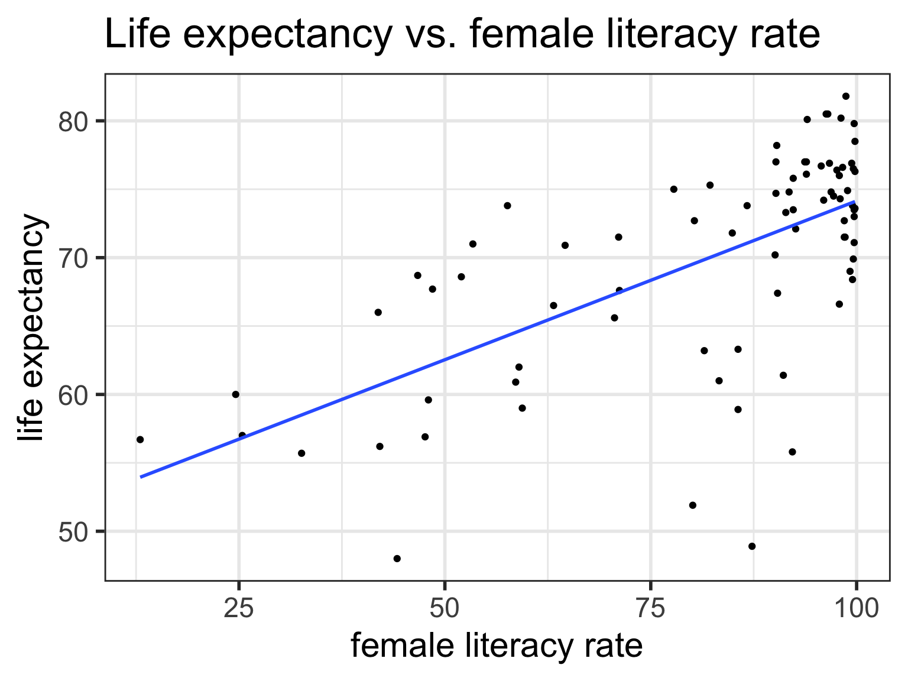
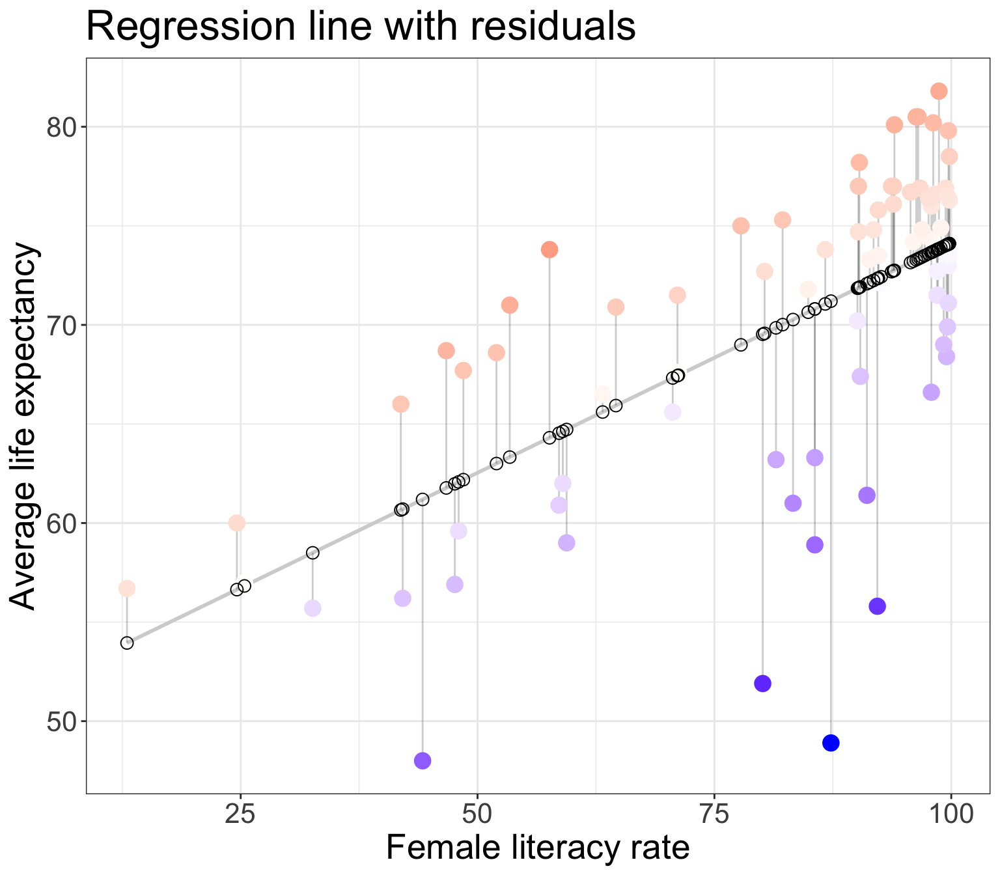
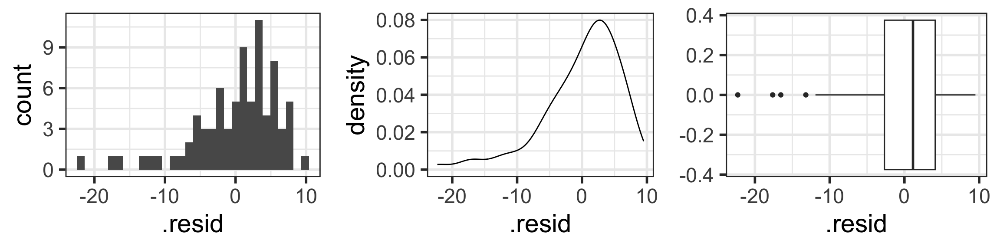
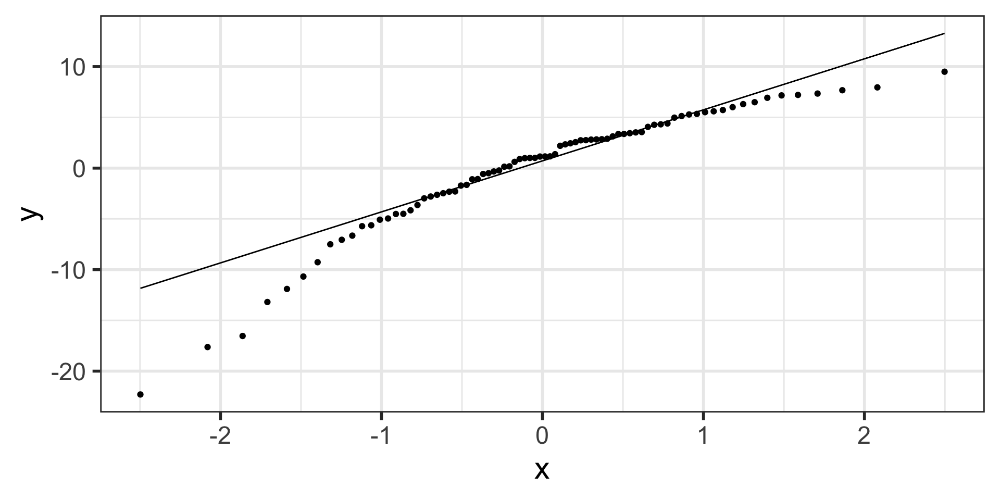
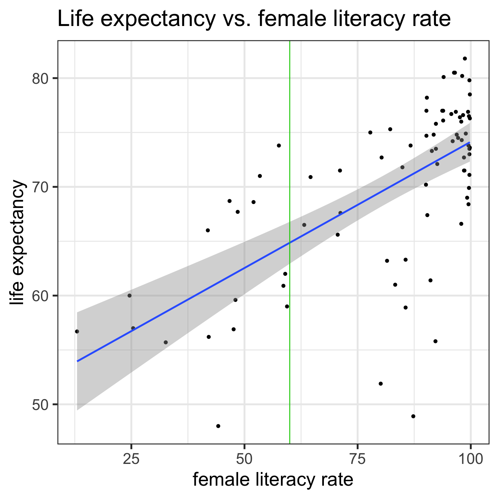
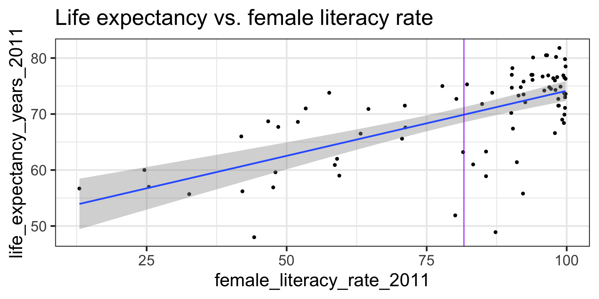

Day 16: Simple Linear Regression Part 2 (Sections 6.3-6.4)
BSTA 511/611
OHSU-PSU School of Public Health
2023-11-27
Where are we?

Goals for today (Sections 6.3-6.4)
Simple Linear Regression Part 2
- Review of
- best-fit line (aka regression line or least-squares line)
- residuals
- population model
- LINE conditions and how to assess them
- New diagnostic tools:
- Normal QQ plots of residuals
- Residual plots
- New diagnostic tools:
- Coefficient of determination (\(R^2\))
- Regression inference
- Inference for population slope \(\beta_1\)
- CI & hypothesis test
- CI for mean response \(\mu_{Y|x^*}\)
- Prediction interval for predicting individual observations
- Confidence bands vs. predictions bands
- Inference for population slope \(\beta_1\)
Life expectancy vs. female adult literacy rate

Dataset description
Data file:
lifeexp_femlit_water_2011.csvData were downloaded from https://www.gapminder.org/data/
2011 is the most recent year with the most complete data
Life expectancy = the average number of years a newborn child would live if current mortality patterns were to stay the same. Source: https://www.gapminder.org/data/documentation/gd004/
Adult literacy rate is the percentage of people ages 15 and above who can, with understanding, read and write a short, simple statement on their everyday life. Source: http://data.uis.unesco.org/
At least basic water source (%) = the percentage of people using at least basic water services. This indicator encompasses both people using basic water services as well as those using safely managed water services. Basic drinking water services is defined as drinking water from an improved source, provided collection time is not more than 30 minutes for a round trip. Improved water sources include piped water, boreholes or tubewells, protect dug wells, protected springs, and packaged or delivered water.
Get to know the data
Load data
Glimpse of the data
Rows: 194
Columns: 5
$ country <chr> "Afghanistan", "Albania", "Algeria", "Andor…
$ life_expectancy_years_2011 <dbl> 56.7, 76.7, 76.7, 82.6, 60.9, 76.9, 76.0, 7…
$ female_literacy_rate_2011 <dbl> 13.0, 95.7, NA, NA, 58.6, 99.4, 97.9, 99.5,…
$ water_basic_source_2011 <dbl> 52.6, 88.1, 92.6, 100.0, 40.3, 97.0, 99.5, …
$ water_2011_quart <chr> "Q1", "Q2", "Q2", "Q4", "Q1", "Q3", "Q4", "…Note the missing values for our variables of interest
gapm_original %>% select(life_expectancy_years_2011, female_literacy_rate_2011) %>%
get_summary_stats()# A tibble: 2 × 13
variable n min max median q1 q3 iqr mad mean sd se
<fct> <dbl> <dbl> <dbl> <dbl> <dbl> <dbl> <dbl> <dbl> <dbl> <dbl> <dbl>
1 life_expec… 187 47.5 82.9 72.7 64.3 76.9 12.6 9.04 70.7 8.44 0.617
2 female_lit… 80 13 99.8 91.6 71.0 98.0 27.0 11.4 81.7 22.0 2.45
# ℹ 1 more variable: ci <dbl>Remove missing values
Remove rows with missing data for life expectancy and female literacy rate
gapm <- gapm_original %>%
drop_na(life_expectancy_years_2011, female_literacy_rate_2011)
glimpse(gapm)Rows: 80
Columns: 5
$ country <chr> "Afghanistan", "Albania", "Angola", "Antigu…
$ life_expectancy_years_2011 <dbl> 56.7, 76.7, 60.9, 76.9, 76.0, 73.8, 71.0, 7…
$ female_literacy_rate_2011 <dbl> 13.0, 95.7, 58.6, 99.4, 97.9, 99.5, 53.4, 9…
$ water_basic_source_2011 <dbl> 52.6, 88.1, 40.3, 97.0, 99.5, 97.8, 96.7, 9…
$ water_2011_quart <chr> "Q1", "Q2", "Q1", "Q3", "Q4", "Q3", "Q3", "…No missing values now for our variables of interest
# A tibble: 2 × 13
variable n min max median q1 q3 iqr mad mean sd se
<fct> <dbl> <dbl> <dbl> <dbl> <dbl> <dbl> <dbl> <dbl> <dbl> <dbl> <dbl>
1 life_expec… 80 48 81.8 72.4 65.9 75.8 9.95 6.30 69.9 7.95 0.889
2 female_lit… 80 13 99.8 91.6 71.0 98.0 27.0 11.4 81.7 22.0 2.45
# ℹ 1 more variable: ci <dbl>Important
- Removing the rows with missing data was not needed to run the regression model.
- I did this step since later we will be calculating the standard deviations of the explanatory and response variables for just the values included in the regression model. It’ll be easier to do this if we remove the missing values now.
Regression line = best-fit line
\[\widehat{y} = b_0 + b_1 \cdot x \]
- \(\hat{y}\) is the predicted outcome for a specific value of \(x\).
- \(b_0\) is the intercept
- \(b_1\) is the slope of the line, i.e., the increase in \(\hat{y}\) for every increase of one (unit increase) in \(x\).
- slope = rise over run

- Intercept
- The expected outcome for the \(y\)-variable when the \(x\)-variable is 0.
- Slope
- For every increase of 1 unit in the \(x\)-variable, there is an expected increase of, on average, \(b_1\) units in the \(y\)-variable.
- We only say that there is an expected increase and not necessarily a causal increase.
Regression in R: lm(), summary(), & tidy()
Call:
lm(formula = life_expectancy_years_2011 ~ female_literacy_rate_2011,
data = gapm)
Residuals:
Min 1Q Median 3Q Max
-22.299 -2.670 1.145 4.114 9.498
Coefficients:
Estimate Std. Error t value Pr(>|t|)
(Intercept) 50.92790 2.66041 19.143 < 2e-16 ***
female_literacy_rate_2011 0.23220 0.03148 7.377 1.5e-10 ***
---
Signif. codes: 0 '***' 0.001 '**' 0.01 '*' 0.05 '.' 0.1 ' ' 1
Residual standard error: 6.142 on 78 degrees of freedom
Multiple R-squared: 0.4109, Adjusted R-squared: 0.4034
F-statistic: 54.41 on 1 and 78 DF, p-value: 1.501e-10| term | estimate | std.error | statistic | p.value |
|---|---|---|---|---|
| (Intercept) | 50.9278981 | 2.66040695 | 19.142898 | 3.325312e-31 |
| female_literacy_rate_2011 | 0.2321951 | 0.03147744 | 7.376557 | 1.501286e-10 |
Regression equation for our model:
\[\widehat{\textrm{life expectancy}} = 50.9 + 0.232 \cdot \textrm{female literacy rate} \]
Residuals
- Observed values \(y_i\)
- the values in the dataset
- Fitted values \(\widehat{y}_i\)
- the values that fall on the best-fit line for a specific \(x_i\)
- Residuals \(e_i = y_i - \widehat{y}_i\)
- the differences between the observed and fitted values

The (population) regresison model
- The (population) regression model is denoted by
\[Y = \beta_0 + \beta_1 \cdot X + \epsilon\]
- \(\beta_0\) and \(\beta_1\) are unknown population parameters
- \(\epsilon\) (epsilon) is the error about the line
- It is assumed to be a random variable:
- \(\epsilon \sim N(0, \sigma^2)\)
- variance \(\sigma^2\) is constant
- It is assumed to be a random variable:
The line is the average (expected) value of \(Y\) given a value of \(x\): \(E(Y|x)\).
The point estimates for \(\beta_0\) and \(\beta_1\) based on a sample are denoted by \(b_0, b_1, s_{residuals}^2\)
- Note: also common notation is \(\widehat{\beta}_0, \widehat{\beta}_1, \widehat{\sigma}^2\)
What are the LINE conditions?
For “good” model fit and to be able to make inferences and predictions based on our models, 4 conditions need to be satisfied.
Briefly:
- L inearity of relationship between variables
- I ndependence of the Y values
- N ormality of the residuals
- E quality of variance of the residuals (homoscedasticity)
- L : there is a linear relationship between the mean response (Y) and the explanatory variable (X),
- I : the errors are independent—there’s no connection between how far any two points lie from the regression line,
- N : the responses are normally distributed at each level of X, and
- E : the variance or, equivalently, the standard deviation of the responses is equal for all levels of X.
L: Linearity of relationship between variables
Is the association between the variables linear?
- Diagnostic tools:
- Scatterplot
- Residual plot (see later section for E : Equality of variance of the residuals)
I: Independence of the residuals (\(Y\) values)
Are the data points independent of each other?
Examples of when they are not independent, include
- repeated measures (such as baseline, 3 months, 6 months)
- data from clusters, such as different hospitals or families
This condition is checked by reviewing the study design and not by inspecting the data
How to analyze data using regression models when the \(Y\)-values are not independent is covered in BSTA 519 (Longitudinal data)
N: Normality of the residuals
- Extract residuals from regression model in R
- Diagnostic tools:
- Distribution plots of residuals
- QQ plots
N: Normality of the residuals
- The responses Y are normally distributed at each level of x

Extract model’s residuals in R
- First extract the residuals’ values from the model output using the
augment()function from thebroompackage. - Get a tibble with the orginal data, as well as the residuals and some other important values.
model1 <- lm(life_expectancy_years_2011 ~ female_literacy_rate_2011,
data = gapm)
aug1 <- augment(model1)
glimpse(aug1)Rows: 80
Columns: 8
$ life_expectancy_years_2011 <dbl> 56.7, 76.7, 60.9, 76.9, 76.0, 73.8, 71.0, 7…
$ female_literacy_rate_2011 <dbl> 13.0, 95.7, 58.6, 99.4, 97.9, 99.5, 53.4, 9…
$ .fitted <dbl> 53.94643, 73.14897, 64.53453, 74.00809, 73.…
$ .resid <dbl> 2.7535654, 3.5510294, -3.6345319, 2.8919074…
$ .hat <dbl> 0.13628996, 0.01768176, 0.02645854, 0.02077…
$ .sigma <dbl> 6.172684, 6.168414, 6.167643, 6.172935, 6.1…
$ .cooksd <dbl> 1.835891e-02, 3.062372e-03, 4.887448e-03, 2…
$ .std.resid <dbl> 0.48238134, 0.58332052, -0.59972251, 0.4757…Check normality with “usual” distribution plots
Note that below I save each figure, and then combine them together in one row of output using grid.arrange() from the gridExtra package.
Normal QQ plots (QQ = quantile-quantile)
- It can be tricky to eyeball with a histogram or density plot whether the residuals are normal or not
- QQ plots are often used to help with this
- Vertical axis: data quantiles
- data points are sorted in order and
- assigned quantiles based on how many data points there are
- Horizontal axis: theoretical quantiles
- mean and standard deviation (SD) calculated from the data points
- theoretical quantiles are calculated for each point, assuming the data are modeled by a normal distribution with the mean and SD of the data

- Data are approximately normal if points fall on a line.
See more info at https://data.library.virginia.edu/understanding-QQ-plots/
Examples of Normal QQ plots (1/5)
- Data:
- Body measurements from 507 physically active individuals
- in their 20’s or early 30’s
- within normal weight range.

Examples of Normal QQ plots (2/5)
Skewed right distribution

Examples of Normal QQ plots (3/5)
Long tails in distribution

Examples of Normal QQ plots (4/5)
Bimodal distribution

Examples of Normal QQ plots (5/5)

QQ plot of residuals of model1

Compare to randomly generated Normal QQ plots
How “good” we can expect a QQ plot to look depends on the sample size.
The QQ plots on the next slides are randomly generated
- using random samples from actual standard normal distributions \(N(0,1)\).
Thus, all the points in the QQ plots should theoretically fall in a line
However, there is sampling variability…
Randomly generated Normal QQ plots: n=100
- Note that
stat_qq_line()doesn’t work with randomly generated samples, and thus the code below manually creates the line that the points should be on (which is \(y=x\) in this case.)
samplesize <- 100
rand_qq1 <- ggplot() +
stat_qq(aes(sample = rnorm(samplesize))) +
# line y=x
geom_abline(intercept = 0, slope = 1,
color = "blue")
rand_qq2 <- ggplot() +
stat_qq(aes(sample = rnorm(samplesize))) +
geom_abline(intercept = 0, slope = 1,
color = "blue")
rand_qq3 <- ggplot() +
stat_qq(aes(sample = rnorm(samplesize))) +
geom_abline(intercept = 0, slope = 1,
color = "blue")
rand_qq4 <- ggplot() +
stat_qq(aes(sample = rnorm(samplesize))) +
geom_abline(intercept = 0, slope = 1,
color = "blue")Examples of simulated Normal QQ plots: n=10
With fewer data points,
- simulated QQ plots are more likely to look “less normal”
- even though the data points were sampled from normal distributions.
samplesize <- 10 # only change made to code!
rand_qq1 <- ggplot() +
stat_qq(aes(sample = rnorm(samplesize))) +
# line y=x
geom_abline(intercept = 0, slope = 1,
color = "blue")
rand_qq2 <- ggplot() +
stat_qq(aes(sample = rnorm(samplesize))) +
geom_abline(intercept = 0, slope = 1,
color = "blue")
rand_qq3 <- ggplot() +
stat_qq(aes(sample = rnorm(samplesize))) +
geom_abline(intercept = 0, slope = 1,
color = "blue")
rand_qq4 <- ggplot() +
stat_qq(aes(sample = rnorm(samplesize))) +
geom_abline(intercept = 0, slope = 1,
color = "blue")
Examples of simulated Normal QQ plots: n=1,000
With more data points,
- simulated QQ plots are more likely to look “more normal”
samplesize <- 1000 # only change made to code!
rand_qq1 <- ggplot() +
stat_qq(aes(sample = rnorm(samplesize))) +
# line y=x
geom_abline(intercept = 0, slope = 1,
color = "blue")
rand_qq2 <- ggplot() +
stat_qq(aes(sample = rnorm(samplesize))) +
geom_abline(intercept = 0, slope = 1,
color = "blue")
rand_qq3 <- ggplot() +
stat_qq(aes(sample = rnorm(samplesize))) +
geom_abline(intercept = 0, slope = 1,
color = "blue")
rand_qq4 <- ggplot() +
stat_qq(aes(sample = rnorm(samplesize))) +
geom_abline(intercept = 0, slope = 1,
color = "blue")Back to our example
Residuals from Life Expectancy vs. Female Literacy Rate Regression

Simulated QQ plot of Normal Residuals with n = 80
E: Equality of variance of the residuals
- Homoscedasticity
- Diagnostic tool: residual plot
Residual plot
- \(x\) = explanatory variable from regression model
- (or the fitted values for a multiple regression)
- \(y\) = residuals from regression model
[1] "life_expectancy_years_2011" "female_literacy_rate_2011"
[3] ".fitted" ".resid"
[5] ".hat" ".sigma"
[7] ".cooksd" ".std.resid" 
E: Equality of variance of the residuals (Homoscedasticity)
- The variance or, equivalently, the standard deviation of the responses is equal for all values of x.
- This is called homoskedasticity (top row)
- If there is heteroskedasticity (bottom row), then the assumption is not met.

\(R^2\) = Coefficient of determination
Another way to assess model fit
\(R^2\) = Coefficient of determination (1/2)
- Recall that the correlation coefficient \(r\) measures the strength of the linear relationship between two numerical variables
- \(R^2\) is usually used to measure the strength of a linear fit
- For a simple linear regression model (one numerical predictor), \(R^2\) is just the square of the correlation coefficient
- In general, \(R^2\) is the proportion of the variability of the dependent variable that is explained by the independent variable(s)
\[R^2 = \frac{\textrm{variance of predicted y-values}}
{\textrm{variance of observed y-values}} = \frac{\sum_{i=1}^n(\widehat{y}_i-\bar{y})^2}
{\sum_{i=1}^n(y_i-\bar{y})^2}
= \frac{s_y^2 - s_{\textrm{residuals}}^2}
{s_y^2}\] \[R^2 = 1- \frac{s_{\textrm{residuals}}^2}
{s_y^2}\] where \(\frac{s_{\textrm{residuals}}^2}{s_y^2}\) is the proportion of “unexplained” variability in the \(y\) values,
and thus \(R^2 = 1- \frac{s_{\textrm{residuls}}^2}{s_y^2}\) is the proportion of “explained” variability in the \(y\) values
\(R^2\) = Coefficient of determination (2/2)
Recall, \(-1<r<1\)
Thus, \(0<R^2<1\)
In practice, we want “high” \(R^2\) values, i.e. \(R^2\) as close to 1 as possible.
Calculating \(R^2\) in R using glance() from the broom package:
# A tibble: 1 × 12
r.squared adj.r.squared sigma statistic p.value df logLik AIC BIC
<dbl> <dbl> <dbl> <dbl> <dbl> <dbl> <dbl> <dbl> <dbl>
1 0.411 0.403 6.14 54.4 1.50e-10 1 -258. 521. 529.
# ℹ 3 more variables: deviance <dbl>, df.residual <int>, nobs <int>[1] 0.4109366Warning
- A model can have a high \(R^2\) value when there is a curved pattern.
- Always first check whether a linear model is reasonable or not.
\(R^2\) in summary() R output
Call:
lm(formula = life_expectancy_years_2011 ~ female_literacy_rate_2011,
data = gapm)
Residuals:
Min 1Q Median 3Q Max
-22.299 -2.670 1.145 4.114 9.498
Coefficients:
Estimate Std. Error t value Pr(>|t|)
(Intercept) 50.92790 2.66041 19.143 < 2e-16 ***
female_literacy_rate_2011 0.23220 0.03148 7.377 1.5e-10 ***
---
Signif. codes: 0 '***' 0.001 '**' 0.01 '*' 0.05 '.' 0.1 ' ' 1
Residual standard error: 6.142 on 78 degrees of freedom
Multiple R-squared: 0.4109, Adjusted R-squared: 0.4034
F-statistic: 54.41 on 1 and 78 DF, p-value: 1.501e-10Compare to the square of the correlation coefficient \(r\):
Regression inference
- Inference for population slope \(\beta_1\)
- CI for mean response \(\mu_{Y|x^*}\)
- Prediction interval for predicting individual observations
Inference for population slope \(\beta_1\)
# Fit regression model:
model1 <- lm(life_expectancy_years_2011 ~ female_literacy_rate_2011,
data = gapm)
# Get regression table:
tidy(model1, conf.int = TRUE) %>% gt() # conf.int = TRUE part is new! | term | estimate | std.error | statistic | p.value | conf.low | conf.high |
|---|---|---|---|---|---|---|
| (Intercept) | 50.9278981 | 2.66040695 | 19.142898 | 3.325312e-31 | 45.6314348 | 56.2243615 |
| female_literacy_rate_2011 | 0.2321951 | 0.03147744 | 7.376557 | 1.501286e-10 | 0.1695284 | 0.2948619 |
\[\begin{align} \widehat{y} =& b_0 + b_1 \cdot x\\ \widehat{\text{life expectancy}} =& 50.9 + 0.232 \cdot \text{female literacy rate} \end{align}\]
- What are \(H_0\) and \(H_A\)?
- How do we calculate the standard error, statistic, p-value, and CI?
Note
- We can also test & calculate CI for the population intercept
- This will be covered in BSTA 512
Inference for the population slope: CI and hypothesis test
Population model
line + random “noise”
\[Y = \beta_0 + \beta_1 \cdot X + \varepsilon\] with \(\varepsilon \sim N(0,\sigma)\)
\(\sigma\) is the variability (SD) of the residuals
Sample best-fit (least-squares) line:
\[\widehat{y} = b_0 + b_1 \cdot x \]
Note: Some sources use \(\widehat{\beta}\) instead of \(b\).
- Construct a 95% confidence interval for the population slope \(\beta_1\)
- Conduct the hypothesis test
\[\begin{align} H_0 &: \beta_1 = 0\\ \text{vs. } H_A&: \beta_1 \neq 0 \end{align}\]
Note: R reports p-values for 2-sided tests
CI for population slope \(\beta_1\)
Recall the general CI formula:
\[\textrm{Point Estimate} \pm t^*\cdot SE_{\textrm{Point Estimate}}\]
For the CI of the coefficient \(b_1\) this translates to
\[b_1 \pm t^*\cdot SE_{b_1}\] where \(t^*\) is the critical value from a \(t\)-distribution with \(df = n -2\).
How is \(\text{SE}_{b_1}\) calculated? See next slide.
Standard error of fitted slope \(b_1\)
\[\text{SE}_{b_1} = \frac{s_{\textrm{residuals}}}{s_x\sqrt{n-1}}\]
\(\text{SE}_{b_1}\) is the variability of the statistic \(b_1\)
- \(s_{\textrm{residuals}}^2\) is the sd of the residuals
- \(s_x\) is the sample sd of the explanatory variable \(x\)
- \(n\) is the sample size, or the number of (complete) pairs of points
# A tibble: 1 × 12
r.squared adj.r.squared sigma statistic p.value df logLik AIC BIC
<dbl> <dbl> <dbl> <dbl> <dbl> <dbl> <dbl> <dbl> <dbl>
1 0.411 0.403 6.14 54.4 1.50e-10 1 -258. 521. 529.
# ℹ 3 more variables: deviance <dbl>, df.residual <int>, nobs <int># standard deviation of the residuals (Residual standard error in summary() output)
(s_resid <- glance(model1)$sigma)[1] 6.142157[1] 21.95371[1] 80[1] 0.03147744Calculate CI for population slope \(\beta_1\)
\[b_1 \pm t^*\cdot SE_{b_1}\]
where \(t^*\) is the \(t\)-distribution critical value with \(df = n -2\).
| term | estimate | std.error | statistic | p.value | conf.low | conf.high |
|---|---|---|---|---|---|---|
| (Intercept) | 50.9278981 | 2.66040695 | 19.142898 | 3.325312e-31 | 45.6314348 | 56.2243615 |
| female_literacy_rate_2011 | 0.2321951 | 0.03147744 | 7.376557 | 1.501286e-10 | 0.1695284 | 0.2948619 |
Save regression output for the row with the slope’s information:
| term | estimate | std.error | statistic | p.value |
|---|---|---|---|---|
| female_literacy_rate_2011 | 0.2321951 | 0.03147744 | 7.376557 | 1.501286e-10 |
Save values needed for CI:
Hypothesis test for population slope \(\beta_1\)
\[\begin{align} H_0 &: \beta_1 = 0\\ \text{vs. } H_A&: \beta_1 \neq 0 \end{align}\]
The test statistic for \(b_1\) is
\[t = \frac{ b_1 - \beta_1}{ \text{SE}_{b_1}} = \frac{ b_1}{ \text{SE}_{b_1}}\]
when we assume \(H_0: \beta_1 = 0\) is true.
| term | estimate | std.error | statistic | p.value | conf.low | conf.high |
|---|---|---|---|---|---|---|
| (Intercept) | 50.9278981 | 2.66040695 | 19.142898 | 3.325312e-31 | 45.6314348 | 56.2243615 |
| female_literacy_rate_2011 | 0.2321951 | 0.03147744 | 7.376557 | 1.501286e-10 | 0.1695284 | 0.2948619 |
Calculate the test statistic using the values in the regression table:
# recall model1_b1 is regression table restricted to b1 row
(TestStat <- model1_b1$estimate / model1_b1$std.error)[1] 7.376557Compare this test statistic value to the one from the regression table above
\(p\)-value for testing population slope \(\beta_1\)
As usual, the \(p\)-value is the probability of obtaining a test statistic just as extreme or more extreme than the observed test statistic assuming the null hypothesis \(H_0\) is true.
To calculate the \(p\)-value, we need to know the probability distribution of the test statistic (the null distribution) assuming \(H_0\) is true.
Statistical theory tells us that the test statistic \(t\) can be modeled by a \(t\)-distribution with \(df = n-2\).
Recall that this is a 2-sided test:
Compare the \(p\)-value to the one from the regression table below
| term | estimate | std.error | statistic | p.value | conf.low | conf.high |
|---|---|---|---|---|---|---|
| (Intercept) | 50.9278981 | 2.66040695 | 19.142898 | 3.325312e-31 | 45.6314348 | 56.2243615 |
| female_literacy_rate_2011 | 0.2321951 | 0.03147744 | 7.376557 | 1.501286e-10 | 0.1695284 | 0.2948619 |
Prediction (& inference)
- Prediction for mean response
- Prediction for new individual observation
Prediction with regression line
| term | estimate | std.error | statistic | p.value |
|---|---|---|---|---|
| (Intercept) | 50.9278981 | 2.66040695 | 19.142898 | 3.325312e-31 |
| female_literacy_rate_2011 | 0.2321951 | 0.03147744 | 7.376557 | 1.501286e-10 |
\[\widehat{\textrm{life expectancy}} = 50.9 + 0.232 \cdot \textrm{female literacy rate} \]
What is the predicted life expectancy for a country with female literacy rate 60%?
\[\widehat{\textrm{life expectancy}} = 50.9 + 0.232 \cdot 60 = 64.82\]
- How do we interpret the predicted value?
- How variable is it?
Prediction with regression line
Recall the population model:
line + random “noise”
\[Y = \beta_0 + \beta_1 \cdot X + \varepsilon\] with \(\varepsilon \sim N(0,\sigma)\)
\(\sigma\) is the variability (SD) of the residuals
- When we take the expected value, at a given value \(x^*\), we have that the predicted response is the average expected response at \(x^*\):
\[\widehat{E[Y|x^*]} = b_0 + b_1 x^*\]

- These are the points on the regression line.
- The mean responses has variability, and we can calculate a CI for it, for every value of \(x^*\).
CI for mean response \(\mu_{Y|x^*}\)
\[\widehat{E[Y|x^*]} \pm t_{n-2}^* \cdot SE_{\widehat{E[Y|x^*]}}\]
- \(SE_{\widehat{E[Y|x^*]}}\) is calculated using
\[SE_{\widehat{E[Y|x^*]}} = s_{residuals} \sqrt{\frac{1}{n} + \frac{(x^* - \bar{x})^2}{(n-1)s_x^2}}\]
- \(\widehat{E[Y|x^*]}\) is the predicted value at the specified point \(x^*\) of the explanatory variable
- \(s_{\textrm{residuals}}^2\) is the sd of the residuals
- \(n\) is the sample size, or the number of (complete) pairs of points
- \(\bar{x}\) is the sample mean of the explanatory variable \(x\)
- \(s_x\) is the sample sd of the explanatory variable \(x\)
- Recall that \(t_{n-2}^*\) is calculated using
qt()and depends on the confidence level.
Example: CI for mean response \(\mu_{Y|x^*}\)
Find the 95% CI for the mean life expectancy when the female literacy rate is 60.
\[\begin{align} \widehat{E[Y|x^*]} &\pm t_{n-2}^* \cdot SE_{\widehat{E[Y|x^*]}}\\ 64.8596 &\pm 1.990847 \cdot s_{residuals} \sqrt{\frac{1}{n} + \frac{(x^* - \bar{x})^2}{(n-1)s_x^2}}\\ 64.8596 &\pm 1.990847 \cdot 6.142157 \sqrt{\frac{1}{80} + \frac{(60 - 81.65375)^2}{(80-1)21.95371^2}}\\ 64.8596 &\pm 1.990847 \cdot 0.9675541\\ 64.8596 &\pm 1.926252\\ (62.93335 &, 66.78586) \end{align}\]
Example: Using R for CI for mean response \(\mu_{Y|x^*}\)
Find the 95% CI’s for the mean life expectancy when the female literacy rate is 40, 60, and 80.
- Use the base R
predict()function - Requires specification of a
newdata“value”- The
newdatavalue is \(x^*\) - This has to be in the format of a data frame though
- with column name identical to the predictor variable in the model
- The
female_literacy_rate_2011
1 40
2 60
3 80Interpretation
We are 95% confident that the average life expectancy for a country with a 60% female literacy rate will be between 62.9 and 66.8 years.
Confidence bands for mean response \(\mu_{Y|x^*}\)
- Often we plot the CI for many values of X, creating confidence bands
- The confidence bands are what ggplot creates when we set
se = TRUEwithingeom_smooth - For what values of x are the confidence bands (intervals) narrowest?
Width of confidence bands for mean response \(\mu_{Y|x^*}\)
- For what values of \(x^*\) are the confidence bands (intervals) narrowest? widest?
\[\begin{align} \widehat{E[Y|x^*]} &\pm t_{n-2}^* \cdot SE_{\widehat{E[Y|x^*]}}\\ \widehat{E[Y|x^*]} &\pm t_{n-2}^* \cdot s_{residuals} \sqrt{\frac{1}{n} + \frac{(x^* - \bar{x})^2}{(n-1)s_x^2}} \end{align}\]
Prediction interval for predicting individual observations
- We do not call this interval a CI since \(Y\) is a random variable instead of a parameter
- The form is similar to a CI though:
\[\widehat{Y|x^*} \pm t_{n-2}^* \cdot s_{residuals} \sqrt{1 + \frac{1}{n} + \frac{(x^* - \bar{x})^2}{(n-1)s_x^2}}\]
- Note that the only difference to the CI for a mean value of y is the additional
1+under the square root.- Thus the width is wider!
Example: Prediction interval
Find the 95% prediction interval for the life expectancy when the female literacy rate is 60.
\[\begin{align} \widehat{Y|x^*} &\pm t_{n-2}^* \cdot s_{residuals} \sqrt{1 + \frac{1}{n} + \frac{(x^* - \bar{x})^2}{(n-1)s_x^2}}\\ 64.8596 &\pm 1.990847 \cdot 6.142157 \sqrt{1+\frac{1}{80} + \frac{(60 - 81.65375)^2}{(80-1)21.95371^2}}\\ (52.48072 &, 77.23849) \end{align}\]
Example: Using R for prediction interval
Find the 95% prediction intervals for the life expectancy when the female literacy rate is 40, 60, and 80.
female_literacy_rate_2011
1 40
2 60
3 80 fit lwr upr
1 60.21570 47.63758 72.79382
2 64.85961 52.48072 77.23849
3 69.50351 57.19879 81.80823Interpretation
We are 95% confident that a new selected country with a 60% female literacy rate will have a life expectancy between 52.5 and 77.2 years.
Prediction bands vs. confidence bands (1/2)
Create a scatterplot with the regression line, 95% confidence bands, and 95% prediction bands.
- First create a data frame with the original data points (both x and y values), their respective predicted values, andtheir respective prediction intervals
- Can do this with
augment()from thebroompackage.
model1_pred_bands <- augment(model1, interval = "prediction")
# take a look at new object:
names(model1_pred_bands) [1] "life_expectancy_years_2011" "female_literacy_rate_2011"
[3] ".fitted" ".lower"
[5] ".upper" ".resid"
[7] ".hat" ".sigma"
[9] ".cooksd" ".std.resid" # glimpse of select variables of interest:
model1_pred_bands %>%
select(life_expectancy_years_2011, female_literacy_rate_2011,
.fitted:.upper) %>%
glimpse()Rows: 80
Columns: 5
$ life_expectancy_years_2011 <dbl> 56.7, 76.7, 60.9, 76.9, 76.0, 73.8, 71.0, 7…
$ female_literacy_rate_2011 <dbl> 13.0, 95.7, 58.6, 99.4, 97.9, 99.5, 53.4, 9…
$ .fitted <dbl> 53.94643, 73.14897, 64.53453, 74.00809, 73.…
$ .lower <dbl> 40.91166, 60.81324, 52.14572, 61.65365, 61.…
$ .upper <dbl> 66.98121, 85.48470, 76.92334, 86.36253, 86.…Prediction bands vs. confidence bands (2/2)
[1] "life_expectancy_years_2011" "female_literacy_rate_2011"
[3] ".fitted" ".lower"
[5] ".upper" ".resid"
[7] ".hat" ".sigma"
[9] ".cooksd" ".std.resid" ggplot(model1_pred_bands,
aes(x=female_literacy_rate_2011, y=life_expectancy_years_2011)) +
geom_point() +
geom_ribbon(aes(ymin = .lower, ymax = .upper), # prediction bands
alpha = 0.2, fill = "red") +
geom_smooth(method=lm) + # confidence bands
labs(title = "SLR with Confidence & Prediction Bands") Caution…
Corrrelation doesn’t imply causation*!
This might seem obvious, but make sure to not write your analysis results in a way that implies causation if the study design doesn’t warrant it (such as an observational study).
Beware of spurious correlations: http://www.tylervigen.com/spurious-correlations

*Caveat: there is a whole field of statistics/epidemiology on causal inference. https://ftp.cs.ucla.edu/pub/stat_ser/r350.pdf
What’s next?